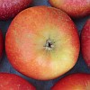
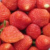
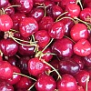
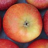
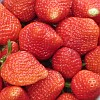
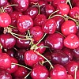

  
  
|
Jèrriais |
Angliais |
|
|
|
|
l'almande |
almond |
|
l'apricot |
apricot |
|
un avocat |
avocado |
|
la badgiole |
dwarf wild cherry |
|
la banane |
banana |
|
la blianche gradile |
whitecurrant |
|
un bliuet |
blueberry, bilberry |
|
la cannebèrge |
cranberry |
|
un cantaloup |
cantaloupe |
|
la châtaine |
chestnut |
|
la chérîthe |
berry |
|
la chérîthe dé seu |
elderberry |
|
eune chérîthe dé chuchet |
honeyberry |
|
la cocannette |
coconut |
|
la codrette |
hazelnut |
|
les corînthes |
currants |
|
lé couaing |
quince |
|
la datte |
date |
|
la figue |
fig |
|
la frambouaise |
raspberry |
|
la frâse |
strawberry |
|
lé frit d'jatchi |
jackfruit |
|
du frit d'la pâssion |
passionfruit |
|
la graine dé seu |
elderberry |
|
la grouaîsile |
gooseberry |
|
la hague |
haw |
|
lé limon |
lemon |
|
lé vèrt limon |
lime |
|
lé mârron |
chestnut |
|
lé m'lon |
melon |
|
lé mêle |
medlar |
|
la mangue |
mango |
|
la meûse |
mulberry |
|
la mouaithe |
blackberry |
|
la grôsse mouaithe |
loganberry |
|
la néthe gradile |
blackcurrant |
|
la nouaix |
walnut |
|
l'olive |
olive |
|
l'orange |
orange |
|
la paithe |
pear |
|
lé pampl'yemousse |
grapefruit |
|
la pêche |
peach |
|
la pomme |
apple |
|
la pomme sauvage |
crabapple |
|
la pomme-grénade |
pomegranate |
|
lé potithon |
pumpkin |
|
la preune dé Damas |
damson |
|
la preune |
plum |
|
la preunelle |
sloe |
|
les raisîns |
raisins |
|
les gros raisîns |
sultanas |
|
la rhubarbe |
rhubarb |
|
la rouoge gradile |
redcurrant |
|
lé tchoeur |
cherry |
|
lé vèrjus |
grapes |
 |
 |
 |
 |
 |

Viyiz étout: